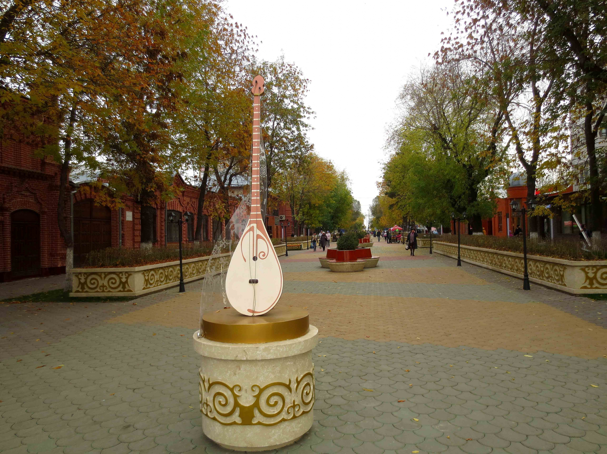

Город Петропавловск
 Петропавловск — это административный центр Северо-Казахстанской области.Город был основан в 1752 году в качестве военной крепости Ново-Ишимской оборонительной линии Российской империи на юге Сибири. Современный город расположен на правом берегу реки Ишим.Ваш отдых в Петропавловске Казахстан может быть культурно-просветительным так как здесь расположены многочисленные культурно-просветительные учреждения — это музей Изобразительного искусств, Музыкально-Драматический Театр, Театр Кукол, Русский Драматический Театр имени Погодина, Дом Культуры. Любителям активного отдыха в Петропавловске предоставляется возможность посетить любую из 14 лыжных баз Петропавловска. Посещение ипподрома доставит удовольствие тем, кто любит спортивные состязания на лошадях, которые регулярно проводятся в городе. Среди достопримечательностей города, которые можно посетить, выделяется ботанический сад, вскоре он отметит свое столетие. Ботанический сад в Петропавловске радует горожан красивой флорой, здесь растут экзотические растения: кактусы, орхидеи, лимонное дерево, пальмы, магнолии и т.д. Из живописных мест отдыха в Петропавловске особой популярностью пользуется парк культуры и отдыха, сюда приходят с детьми чтобы отдохнуть в тени аллей. Очень красивым выглядит искусственный пруд, а многочисленные аттракционы доставят настоящее удовольствие детям. Аква парк «Нептун» всегда рад встречи с вами. Для развлечения и отдыха в Петропавловске имеется развлекательный комплекс «Боунлинг-Центр», а также теннисный корт «INTER» и пейнбольный клуб «Северный легион». Местные отели в основном относятся к категориям 3 и 5 звездочных отелях, если вы хотите сэкономить, то лучше всего воспользоваться отелями советских времен.